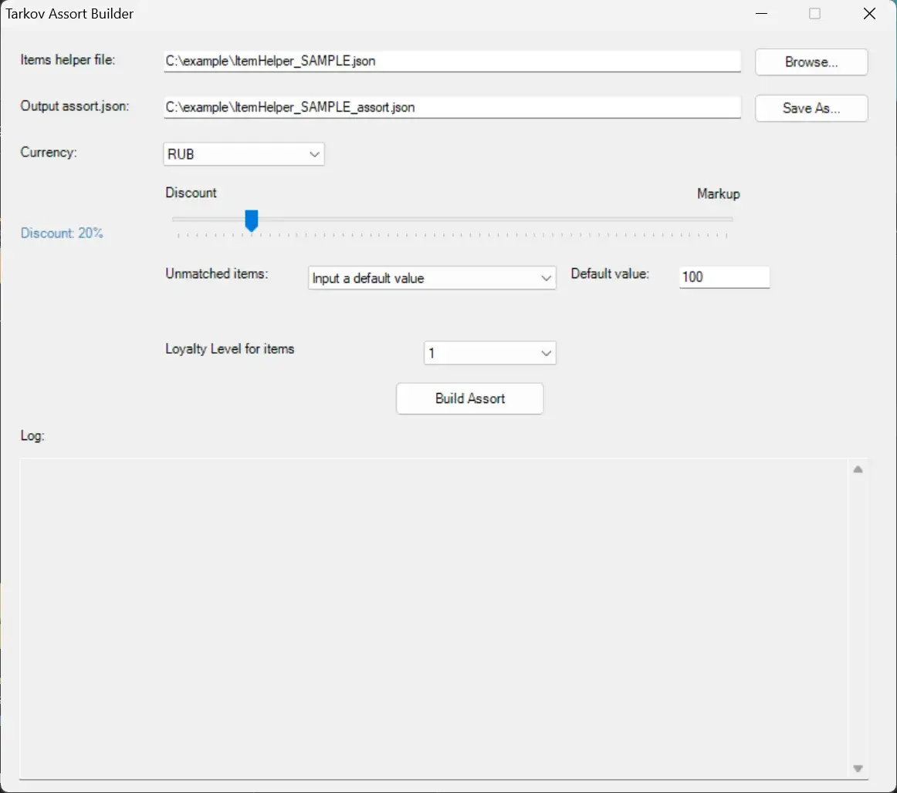
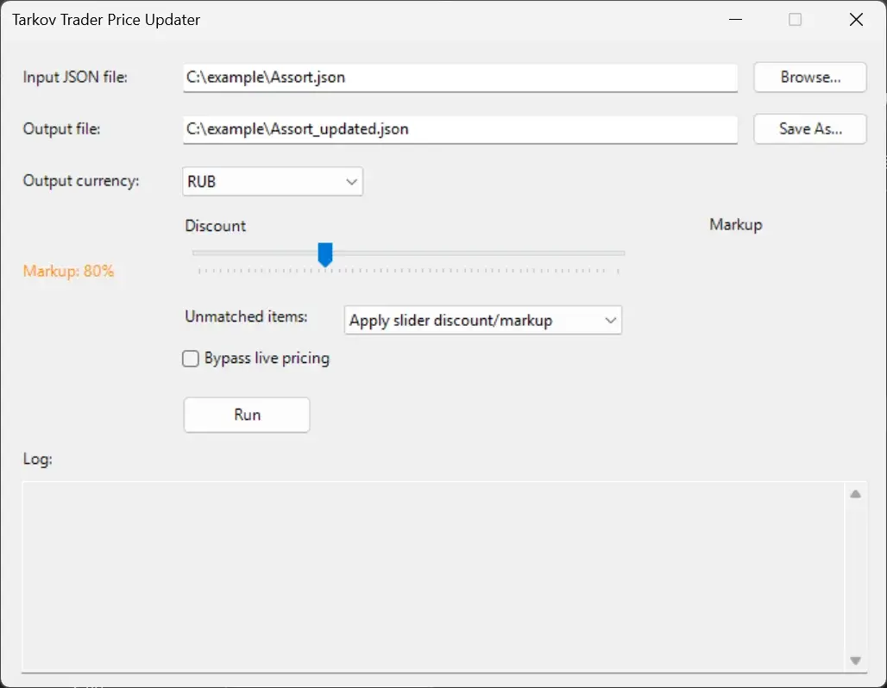

Mod
SPT-TarkovTraderUtility
- Downloads
- 177
- Favourites
- 1
A handy set of GUI utilities to easily and quickly edit assort.json prices and create assort.json files from scratch.
TarkovAssortBuilder
- Builds a complete assort.json using a very simple item helper file.
Instructions:

TarkovPriceUpdater
- Updates your existing assort.json by querrying the latest prices from Tarkov.dev and allows you to markup or discount item prices on the fly with a simple slider.
Instructions:

Version
1.0.2
SPT ~4
Fika: compatible
43 downloads769.8 KB
SPT-TARKOV TRADER UTILITY V1.0.2
New Features:
- Added a checkbox to the TarkovPriceUpdater to ignore online “live” item prices
Bug Fixes:
- Patched several .json formatting issues
VirusTotal: report 1
Version
1.0.0
SPT ~4.0
Fika: compatible
134 downloads769.4 KB
A handy set of GUI utilities to easily and quickly edit assort.json prices and create assort.json files from scratch.
- TarkovAssortBuilder:
Builds a complete assort.json using a very simple item helper file.
- TarkovPriceUpdater:
Updates your existing assort.json by querrying the latest prices from Tarkov.dev and allows you to markup or discount item prices on the fly with a simple slider.
VirusTotal: report 1